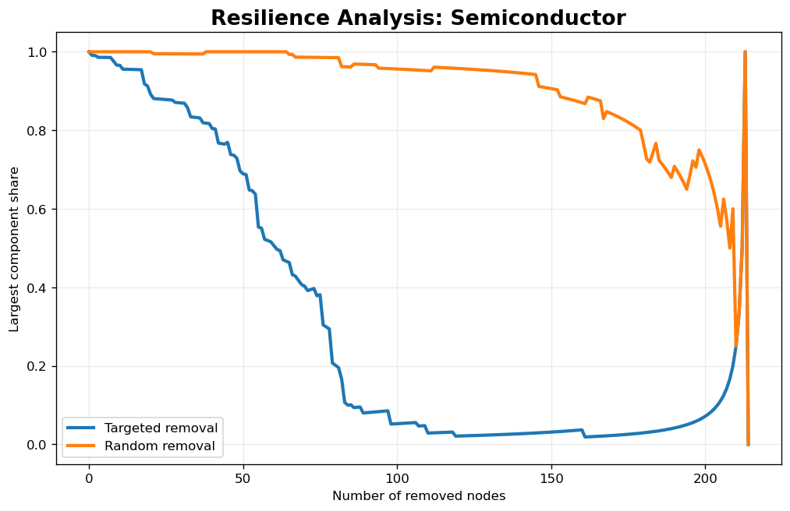
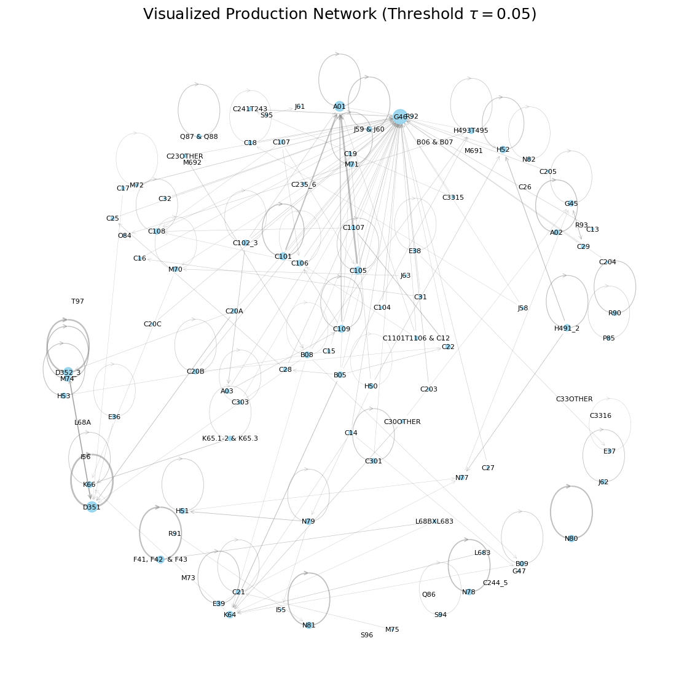
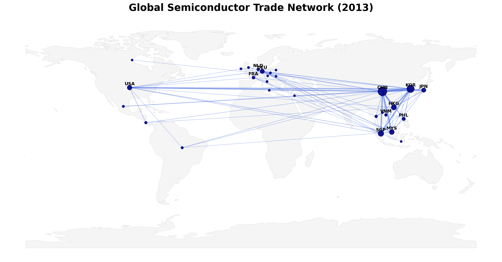
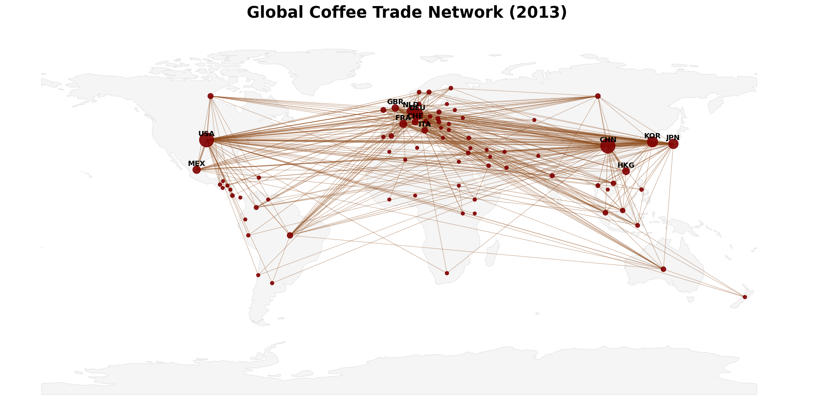

네트워크 분석, 석사 과정
무역·산업 네트워크 분석
반도체·커피 무역 네트워크와 영국 산업연관표를 그래프로 만들어 중심 국가·산업과 충격이 퍼지는 구조를 분석
| 기간 | 2026 |
|---|---|
| 형태 | University of Glasgow 석사 과정 (Network Analysis 과목) |
| 기술 | Python, NetworkX, NumPy, pandas |
| 코드 | github.com/suipizza/Global-Trade-Network-Analysis github.com/suipizza/UK-Production-Network-Analysis |
무역 네트워크: 반도체 vs 커피
- 2013년 무역 데이터로 국가를 노드, 양국 교역을 가중치 링크로 하는 품목별 네트워크 구성
- 연결·매개·고유벡터 중심성으로 핵심 국가를 찾고, 인접행렬 제곱으로 간접 연결 구조 비교
- 무작위 그래프(Erdős–Rényi)와 비교해 허브 집중이 우연이 아님을 확인
- 핵심 국가부터 제거하면 반도체 네트워크가 커피보다 훨씬 빨리 끊어져, 집중된 구조가 충격에 더 취약함을 확인

영국 산업 네트워크
- 2022년 영국 산업연관표를 가중 방향 그래프로 보고, 약한 연결을 걸러 핵심 구조 시각화
- 도매업·금융·전력 관련 산업이 여러 산업에 투입을 공급하는 허브로 나타남
- 거래 규모가 크지 않아도 중요한 산업과 연결된 산업이 충격 전파의 핵심이 될 수 있음을 고유벡터 중심성으로 확인
- 행렬 거듭제곱으로 충격이 여러 단계에 걸쳐 퍼지는 과정 시뮬레이션

추가 결과

